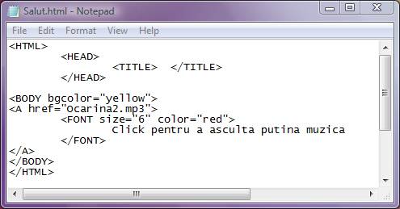
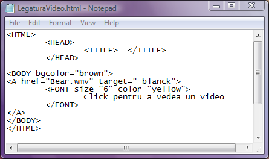
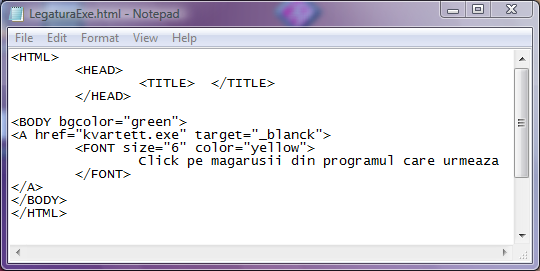

Legaturi catre fisiere oarecare
Nu este obligatoriu ca legaturile sa tinteasca spre fisiere html. Cu ajutorul legaturilor pot fi deschise
orice tipuri de fisiere, cu conditia ca pe calculatorul client sa fie instalate programele care stiu
sa deschida acele fisiere.
Iata o legatura spre un fisier audio in format mp3:

Nu uitati sa permiteti executarea activex pentru a asculta muzica.
Iata in continuare o legatura spre un fisier video:

confirmati deschiderea prin click pe Open atunci cand vi se cere.
In cele ce urmeaza este utilizata o legatura spre un fisier executabil:

Dati click pe optriunea Run cand sunteti solicitat.
Inapoi la Legaturi